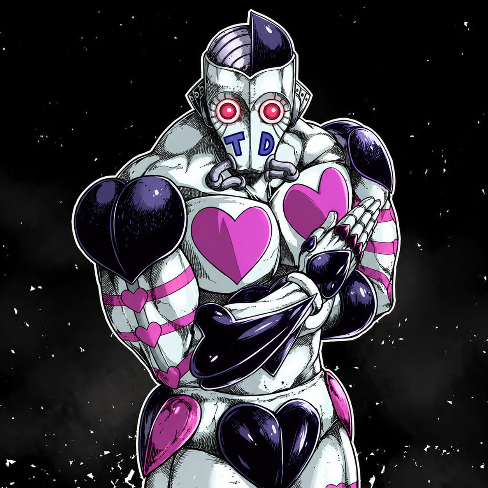

ATUM
Stand สายอ่านเกมของ D'Arby ที่ไม่ได้ชนะด้วยหมัดแรงอย่างเดียว จุดแข็งจริงคือ การอ่านใจ, การทาย YES / NO และ Skill 4 ที่ลากคู่ต่อสู้เข้าเกมเดิมพัน ผู้เล่นที่ชนะยังได้ Winner’s High ช่วยผ่อนคลายอารมณ์ลบเล็กน้อย ส่วนถ้าเจ้าของ ATUM ชนะ เป้าหมายจะถูก “ดึงวิญญาณ” ด้วยท่าปิดฉากของ ATUM
ATUM
สกิล 1 — PUNCH
หมัดพื้นฐาน หมัดจะพุ่งตามทิศที่เล็งและต้องสัมผัสเป้าหมายจริง ระยะจับเป้าประมาณ 1.05 ช่อง ช่วยดูดเป้าเล็กน้อยในระยะ 1.35 ช่อง และหมัดจะเริ่มนับโดนหลังออกท่าประมาณ 0.155 วิ ชาร์จเต็มเพิ่มดาเมจ ×1.85 และแรงกระแทก ×1.45
ดาเมจชาร์จเต็ม: 0.12 × 1.85 = 0.222 ก่อนคูณผลจากเลเวล ค่าปรับเซิร์ฟเวอร์ PvP และคริติคอล
สกิล 2 — BARRAGE
หมัดรัวหันตามเมาส์ได้ตลอด แต่ละหมัดห่างกันประมาณ 0.14 วิ และเริ่มรัวหลังออกท่าประมาณ 0.12 วิ
ปกติ: 14 × 0.034 = 0.476 ดาเมจรวมสูงสุดโดยประมาณ ถ้าโดนครบทุก hit
ชาร์จเต็ม: 22 hit และดาเมจต่อ hit ×1.18 → 0.04012 ต่อ hit หรือประมาณ 0.88264 ดาเมจรวมสูงสุดโดยประมาณ ก่อนคูณผลจากเลเวล ค่าปรับเซิร์ฟเวอร์ PvP และคริติคอล
สกิล 3 — MIND READ / YES–NO
กดแตะ / ปล่อยก่อนหลอดเต็ม = DODGE READ เปิดอ่านใจ 10 วิและใช้ 1 แต้ม ถ้ามีการโจมตีที่รองรับพุ่งเข้าใส่ ATUM สถานะนี้จะถูกใช้เพื่อหลบได้ 1 ครั้ง แล้วขยับผู้โจมตีออกด้านข้างใกล้ตำแหน่งเดิมของเขา โดยไม่ดึงมือปืนหรือผู้เล่นระยะไกลเข้าหา ATUM โหมดนี้ ไม่เปิดคอมโบ Skill 4
กดค้างจนหลอด FULL = GAMBLE READ ใช้ 1 แต้มและอยู่ 10 วินาทีเหมือนกัน แต่จะ ไม่ตอบสนองต่อการโจมตีของมอนหรือผู้เล่น สถานะนี้จะถูกใช้เฉพาะเมื่อ Skill 4 สัมผัสเป้าหมายจริง จากนั้นจึงเปิดช่วง YES / NO Prediction ของเกมพนัน โดยคัตซีน YES / NO เป็น mouse-through จึงยังเห็นเอฟเฟกต์เต็ม ๆ และสามารถกดปุ่ม/ไอคอนของมินิเกมด้านหลังได้ตามปกติ
เปิดได้ทีละโหมดเท่านั้น: ถ้ามี DODGE READ หรือ GAMBLE READ เปิดอยู่ การกด Skill 3 อีกครั้งไม่ว่าจะแตะหรือชาร์จจะเป็นการ ปิดโหมดปัจจุบันก่อน และต้องกดอีกครั้งเพื่อเปิดโหมดใหม่ ไม่มีการสลับโหมดทันทีในปุ่มเดียว
คืนแต้มเมื่อยกเลิกเอง: ถ้าปิด Skill 3 เองก่อนสถานะถูกใช้และก่อนครบเวลา จะคืน Mind Gauge +1 (ไม่เกิน 100) แต่ถ้า DODGE READ ถูกใช้หลบ, GAMBLE READ ถูก Skill 4 ใช้, หรือครบ 10 วินาทีแล้ว จะ ไม่คืนแต้ม
คอมโบกับ Passive ของ Skill 4: ถ้าเปิด AUTO GAMBLE PASSIVE ไว้ แล้ว DODGE READ จาก S3 แตะหลบสำเร็จ ผู้โจมตีที่ทำให้เกิดการหลบจะถูกเชิญเข้า Gamble อัตโนมัติ แต่จะ ไม่ ได้ช่วง YES/NO Prediction เพราะ Prediction สงวนไว้สำหรับ S3 แบบชาร์จ FULL เท่านั้น
MIND GAUGE
ทุกครั้งที่เจ้าของ ATUM ชนะ Skill 4 หลังเกมจบและกลับเข้าสู่โลกปกติแล้ว จะสุ่มแต้ม เกจอ่านใจ 0–3 และเล่น Finish Point นอกจากนี้ถ้ายกเลิก Skill 3 เองก่อนถูกใช้/หมดเวลา ระบบจะคืนแต้มเปิดสกิล +1
ถ้าใช้ GAMBLE READ (ชาร์จ S3 เต็ม) → S4 แล้วทายใจถูก จากนั้นยังชนะเกมอยู่ รางวัลจะถูกบังคับให้ได้อย่างน้อย +1 เพื่อมีโอกาสคืนแต้มที่ใช้เปิดการอ่านใจ
WINNER’S HIGH — รางวัลของผู้ชนะ
เมื่อมินิเกมจบและมี ผู้เล่นเป็นผู้ชนะจริง ผู้เล่นคนนั้นจะได้รับ Winner’s High เพื่อลดอารมณ์ลบเล็กน้อย ใช้ได้กับทั้ง RPS, Baseball และ Racing
เล่นคนเดียว: ท้าซอมบี้เพื่อเล่นมินิเกมระหว่างการเอาตัวรอด ถ้าชนะก็ได้โบนัสคลาย Stress / Panic / Boredom เล็กน้อย เหมือนพักสมองจากการลุยโลกซอมบี้
เล่นกับเพื่อน: จะดวลกันจริงจังเพื่อดูว่าใครอ่านเกมเก่งกว่า หรือเล่นชิล ๆ แล้วเปิดทางให้เพื่อนที่กำลังเครียดมีโอกาสชนะก็ได้ เพราะ ผู้เล่นที่ชนะจริงเป็นคนรับ Winner’s High ไม่จำเป็นต้องเป็นเจ้าของ ATUM
เสมอไม่ให้รางวัล และระบบนี้ไม่ลด Hunger, Thirst, Fatigue, Sickness หรือรักษาบาดแผล เพื่อให้เป็นโบนัสด้านอารมณ์ ไม่ใช่การฟื้นตัวฟรี
สกิล 4 — GAMBLE / AUTO GAMBLE PASSIVE
กดแตะตอน Passive OFF: ATUM พุ่งหมัดออกไปเหมือน Skill 1 ระยะ 2.80 ช่อง หมัดไม่ทำดาเมจและต้องสัมผัสเป้าหมายจริงก่อนจึงจะเริ่ม Gamble จากนั้นสุ่ม Rock Paper Scissors / Baseball / Racing เท่ากัน 1/3
กดค้างจน FULL: เปิด AUTO GAMBLE PASSIVE โดยไม่เสีย Mind Gauge และไม่ใช้หมัดเชิญ กดค้างจน FULL อีกครั้งเพื่อปิด Passive
ขณะ Passive ON: S4 แบบแตะถูกล็อก ไม่พุ่งหมัด ต้องค้าง S4 จน FULL เพื่อปิด Passive ก่อนจึงจะกลับมาใช้ S4 แตะตามปกติได้ Passive จะคงเปิดหลัง Trigger จนกว่าจะปิดเอง
S4 ค้าง + S3 แตะ: เมื่อ DODGE READ หลบการโจมตีสำเร็จ ระบบใช้ผู้โจมตีคนนั้นเป็นเป้าหมาย Gamble อัตโนมัติ ส่วน S3 ค้าง FULL + S4 แตะ คือคอมโบ YES/NO Prediction
เมื่อเกมเริ่มแล้ว Skill 4 ยกเลิกเกมกลางคันไม่ได้
ถ้า ATUM ชนะ จะเกิดอะไรขึ้น?
ถ้าเป้าหมายเป็นซอมบี้หรือ NPC และแพ้เกม ATUM จะใช้ท่าปิดฉากทันที ในคอนเซปคือ ATUM ดึงวิญญาณของผู้แพ้ และเป้าหมายตาย
ถ้ากฎ PvP / Safety ของเซิร์ฟเวอร์อนุญาตให้ทำดาเมจผู้เล่น ผู้เล่นที่แพ้จะโดน ท่าปิดฉาก แบบเดียวกันและเสียชีวิต
ถ้ากฎ PvP / Safety ป้องกันไม่ให้ผู้เล่นทำดาเมจกัน จะ ไม่ถูกฆ่า แต่โดน จอดำ 3 วิแทน เพื่อไม่ให้ Skill 4 ข้ามกฎ PvP/Safety ของมอดหลัก
เจ้าของ ATUM จะไม่ถูก ท่าปิดฉาก ของตัวเอง แต่ Skill ทั้ง 4 ถูก Silence/Lock เป็นเวลา 7 วิ และตอน resolve จะโดน จอดำ 3 วิ
แสดงผลแพ้/ชนะประมาณ 0.5 วิ → ปิด UI จริง → ยังซ่อน/กันดาเมจต่อ 0.5 วิ → คืนผู้เล่นกลับโลก → อีกประมาณ 0.5 วิจึงค่อยลงผลกับผู้แพ้ / ใช้ท่าดึงวิญญาณ → ถ้า ATUM ชนะจึงเล่น Finish Point และสุ่มแต้มเกจอ่านใจ 0–3
ผู้เล่นที่กำลังเล่นถูกแยกออกจากการต่อสู้ปกติด้วยระบบ Phase/Protection ที่อิงแนวเดียวกับระบบพิเศษของ King Crimson: กันดาเมจ, ตัด aggro ซอมบี้ และซ่อนผู้เล่นจากมุมมองของ client อื่น ขณะที่ผู้เล่นยังมองเห็นตัวเองในหน้าจอของตัวเอง ระบบนี้ใช้เฉพาะการซ่อน/ป้องกันระหว่างเกมและ ไม่มี Clone/Decoy
ROCK PAPER SCISSORS
ฝั่งที่ถูกท้าได้เวลา 8 วิในการเลือก Rock / Paper / Scissors ถ้าเป็นซอมบี้ เซิร์ฟเวอร์จะสุ่มคำตอบแทน
มีตัวจับเวลา 8 วิบน UI เพื่อสร้างแรงกดดัน แต่ในโค้ดปัจจุบัน timer ฝั่งเจ้าของเป็น visual pressure ไม่ได้ auto-forfeit แบบฝั่งผู้ถูกท้า
ต้องใช้ GAMBLE READ จากการชาร์จ Skill 3 จน FULL จึงจะมีช่วงทายใจแยก 5 วิ ถ้าทายถูกขึ้น YES และรู้คำตอบจริง ถ้าทายผิดขึ้น NO และอย่างน้อยรู้ว่าตัวเลือกที่เพิ่งทาย “ไม่ใช่” คำตอบ ส่วน S3 แบบแตะจะเป็น DODGE READ และไม่เข้า Prediction
ถ้าออกเหมือนกันจะเป็น Tie ไม่มีท่าดึงวิญญาณ และไม่มีรางวัล เกจอ่านใจ จากการชนะ
BASEBALL
เปิดภาพ/เสียงก่อนประมาณ 6.6 วิ แล้วค่อยเริ่มช่วงเลือกจริง ไม่หักเวลาตัดสินระหว่าง Intro
ช่วงเลือกจริง 8 วิ เป้าหมายเลือกตำแหน่งลูก และ ATUM ต้องเลือกตีให้ตรง ถ้าตรง = Hit / ATUM ชนะ ถ้าผิด = Miss / ATUM แพ้
ถ้าตีถูก มีโอกาส Home Run 10% ตามปกติ และถ้าตีถูกใน 2 วินาทีสุดท้าย จะการันตี Home Run
ทั้ง Hit และ Home Run นับว่า ATUM ชนะเหมือนกัน Home Run เป็นผลพิเศษด้านภาพและเสียง ไม่ได้ให้แต้ม เกจอ่านใจ เพิ่มจากปกติ
RACING
กดค้าง ไม่มีคูลดาวน์ ใช้ กดค้างแล้ว HP จะค่อย ๆ ลดจากประมาณ 2.2 → 4.6 ต่อวินาที ยิ่งค้างนานยิ่งแรง ภายในราว 2.2 วิ ความเร็วจะเพิ่มจาก ×1.28 ไปจนถึง ×1.95 ถ้ามีแค่คันเดียว Boost จะค่อย ๆ ทิ้งระยะอีกคัน แต่ถ้าทั้งสองคัน Boost พร้อมกัน ระยะได้เปรียบจะหักล้างกันและทั้งคู่ยังเสีย HP
ตั้งแต่หน้าจอ Racing เปิดขึ้นมาให้เริ่มกด 1 / BOOST รัวต่อเนื่องได้ทันที ไม่ต้องรอ READY โดยแต่ละ tap ต้องต่อกันภายในประมาณ 0.42 วิ ถ้าครบอย่างน้อย 5 taps จะได้ Launch 2 วิ และถ้า S3 ทาย Boost/No Boost ถูกจะเป็น 4 วิ จำนวน tap มากขึ้นจะเพิ่มความเร็วเฉพาะ Launch นี้แบบผลตอบแทนลดลงเรื่อย ๆ: 5 = ×1.08, 10 = ×1.13, 18 = ×1.18, 30 = ×1.23, 46 = ×1.28, 68 = ×1.32 และ 100+ = ×1.35 สูงสุด ระบบนับสูงสุด 100 เมื่อการแข่งขันเริ่มจริง ปุ่ม 1 จะกลับไปเป็น Skill 1 BOOST แบบกดค้างตามปกติ และความเร็วรวมยังมีเพดานเพื่อกันความเร็วหลุด
ชาร์จเตือน 1.5 วิ → Dash 260 ms → Return 350 ms, CD 4.8 วิ ถ้าโดนปกติทำดาเมจรถ 16 และทำให้อีกคันเสียระยะทางไปประมาณ 0.55 พร้อม Slow 1.1 วิที่ ×0.78
ถ้าอีกคัน Block ถูกจังหวะ ผู้โจมตีโดน ถ้าบล็อกทัน ผู้โจมตีเสีย 12 HP แทน ถ้าทั้งสองคัน Attack ชนกันตรง ๆ จะปะทะกันและทั้งคู่เสีย 8 HP
เสีย 4 HP ตอนกด เปิด 100% protection window 0.75 วิ และมี CD 5 วิ
การเอารถเบียดกันปกติ ไม่ทำดาเมจ ระบบจะแยกรถออกจากกันเท่านั้น ดาเมจรถมาจาก ATTACK / Counter / HP cost / ตกถนน
HP รถเหลือ 0 หรือออกนอกถนน = รถคันนั้นแพ้การแข่ง แต่เกมจะ ไม่ตัดจบทันที รถที่พังจะค่อย ๆ เฟดและเลื่อนออกประมาณ 0.7 วิ จากนั้นรถที่ยังรอดจะเข้าสู่ Final Road เพียงคันเดียวและต้องวิ่งเข้าเส้นชัยจริงก่อนสรุปผล ถ้าทั้งสองคันพังหรือออกนอกถนนพร้อมกันจะเป็น Draw
ถ้าทั้งสองคันยังอยู่ ช่วงแข่งหลักต้องวิ่งครบ 36 วิ ก่อน Final Road จะมา ระบบ Fade 0.76 วิและรักษา gap เดิมไว้ แล้วแข่งกันเข้าเส้นจริง ถ้ามีรถพังก่อนเวลา Final ระบบจะใช้ transition เดียวกันแต่ตัดรถที่พังออก เหลือผู้รอดวิ่งเข้าเส้นชัยเพียงคันเดียว ช่วง Final ปิดการเลี้ยวเมาส์ แต่ BOOST / ATTACK / BLOCK ยังทำงานตามสถานะที่อนุญาต
สุ่ม EASY 10% / MEDIUM 20% / HARD 30% / HARDCORE 40% ระดับสูงจะตัดสินใจเรื่อง Boost / Attack / Block และการบริหาร HP ดีกว่า
ดาเมจกับเลเวลคิดยังไง?
ตัวเลขดาเมจด้านบนคือค่าพื้นฐานของสกิล ก่อน Project JoJo จะเอาเลเวลและค่าปรับอื่น ๆ มาคำนวณเพิ่ม ระดับ Stand ใช้ ตัวคูณดาเมจ จาก 50% ที่ Lv.1 → 100% ที่ Lv.100 แบบเส้นตรง ถ้าปิด Stand Level จะนับเป็น Max Level ทันที และยังมี Sandbox Stand Damage, PvP multiplier และ Critical ที่อาจเปลี่ยนดาเมจจริงอีกชั้น
วิธีเล่นจริง / กลยุทธ์
S3 ไม่มีคูลดาวน์ก็จริง แต่แต้มไม่ฟรี ถ้ายังไม่มีภัยหรือยังไม่พร้อมกด S4 เก็บ Gauge ไว้ก่อนจะคุ้มกว่า
ชาร์จ S3 จน FULL เพื่อเปิด GAMBLE READ → แตะ S4 ให้หมัดสัมผัสเป้า → ใช้ YES/NO Prediction → ชนะเกม → ดึงวิญญาณ → ลุ้นแต้มคืน 0–3
ค้าง S4 FULL เปิด AUTO GAMBLE PASSIVE → แตะ S3 เปิด DODGE READ → ถ้าหลบสำเร็จ ผู้โจมตีคนนั้นถูกเชิญเข้าเกมอัตโนมัติ เหมาะกับการสวนกลับโดยไม่ต้องกด S4 แตะให้ทัน
เล่นคนเดียว: ใช้ซอมบี้เป็นคู่เล่นระหว่างพักจากการเอาตัวรอด ถ้าชนะจะได้ Winner’s High ช่วยลด Stress, Unhappiness, Boredom และ Panic เล็กน้อย เหมาะกับการคลายอารมณ์หลังเจอสถานการณ์หนัก ๆ โดยยังต้องชนะเกมจริง
เล่นกับเพื่อน: จะเปิด PvP แล้วแข่งกันจริงจังก็ได้ แต่ถ้าแค่อยากเล่นสนุกหรือช่วยกันคลายเครียด แนะนำให้ตั้ง PvP / Safety ให้อยู่ในสถานะที่ ไม่อนุญาตให้ทำดาเมจกัน ก่อน เพราะถ้าอนุญาต PvP แล้วเพื่อนแพ้ อาจโดน Soul Extraction และตายได้ ส่วนตอนปิดการทำดาเมจ ผู้ชนะยังได้รับ Winner’s High ตามปกติ จะเล่นเอาจริงหรือยอมให้เพื่อนมีโอกาสชนะบ้างก็ได้
เลือกให้ถูกสำคัญที่สุด แต่ถ้ามั่นใจแล้ว การรอเข้า 2 วิสุดท้ายแล้วยังตีถูกจะเปลี่ยนเป็น Home Run การันตี
HP คือทั้งพลังชีวิตและเชื้อเพลิง ถ้าเผา Boost จนต่ำมาก คุณจะเปิดช่องให้ ATTACK ปิดงานทันที
ADDON / MODEL CREDIT
Workshop ID 3811605058 • Mod ID ProjectJoJoAddonATUM
Required Core: Project JoJo • Workshop ID 3807750510 • Mod ID JoJoStandSystem0183Standalone
โมเดล ATUM ต้นฉบับ: The Models Resource — JoJo's Bizarre Adventure: Diamond Records Reversal
นำมาปรับ rig / animation / optimization สำหรับ Project Zomboid เพิ่มเติม